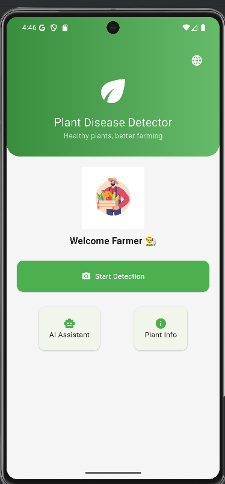
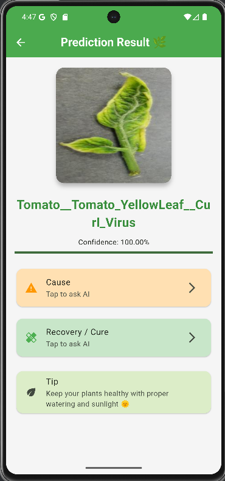

🌱 Plant Disease Detection App
A mobile application developed using Flutter and TensorFlow Lite to identify plant diseases from leaf images and provide instant predictions.
Problem Statement
Farmers often struggle to identify plant diseases early, leading to reduced crop yields and financial losses. This application aims to provide an easy-to-use mobile solution for detecting plant diseases using artificial intelligence.
Technologies Used
Flutter
Dart
TensorFlow Lite
Python
CNN
Deep Learning
Image Classification
Dataset
PlantVillage Dataset containing healthy and diseased plant leaf images.
Key Features
- Real-time disease prediction.
- Image classification using CNN.
- Mobile deployment with TensorFlow Lite.
- User-friendly interface for farmers.
Project Screenshots

